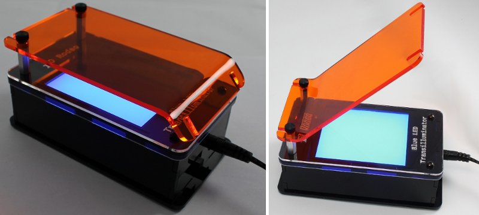
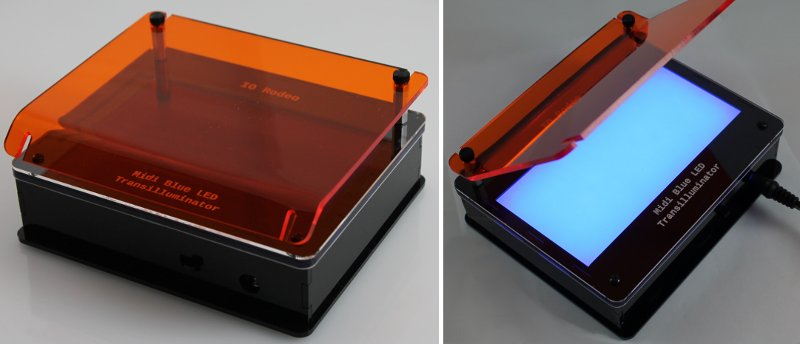
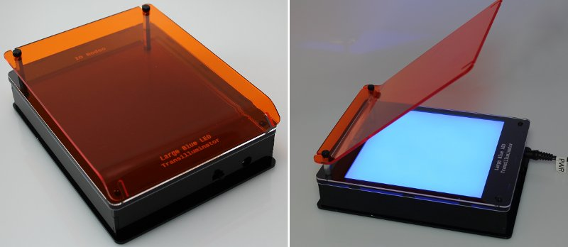

LED Transilluminator Build
Final assembled images
«
Assembly step 4
::
Contents
Final assembled images
¶
Mini Transilluminator
¶

Midi Transilluminator
¶

Large Transilluminator
¶

«
Assembly step 4
::
Contents